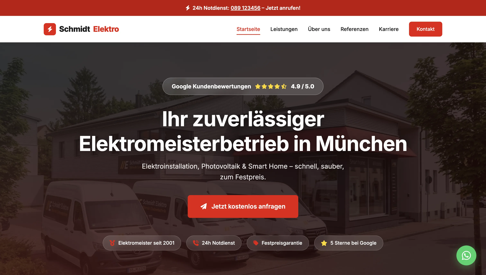
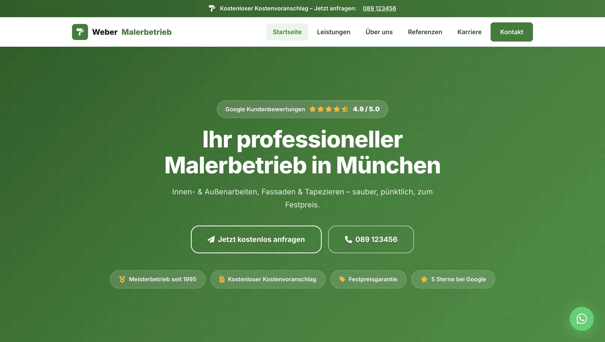

So könnten Ihre Websites aussehen – Live-Beispiele ansehen
Überzeugen Sie sich selbst – so modern und professionell präsentieren wir Ihren Betrieb online.
Müller SHK – Stuttgart
Moderner Webauftritt für einen SHK-Meisterbetrieb – mit Projektanfrage-Formular, Karriereseite und Google-Bewertungen.
Website ansehen
Schmidt Elektro – München
Professioneller Online-Auftritt für einen Elektromeisterbetrieb – mit Photovoltaik, Wallbox und Smart Home Leistungen.
Website ansehen
Weber Malerbetrieb – München
Frischer moderner Auftritt für einen Malerbetrieb – mit Vorher-Nachher Bildern, Karriereseite und Kontaktformular.
Website ansehen
Fischer Dachtechnik – Stuttgart
Industrielles Dark-Design für einen Dachdeckermeister – mit Sturmnotdienst-CTA, Versicherungsabwicklung und 24h-Badge.
Website ansehen
Bauer Fliesen & Naturstein – München
Elegantes Gold-Design für einen Fliesenleger – mit Naturstein-Sparte, Designberaterin und Großformat-Referenzen.
Website ansehen
Wagner Schreinerei – Freiburg
Warmes Holz-Design für einen Schreinermeister – mit Maßmöbel-Konfigurator, Restaurierungsreferenzen und Treppensparte.
Website ansehen
Hoffmann Stuckateur – Heidelberg
Klassisch-elegantes Cormorant-Design – mit BAFA-Förderhinweis für WDVS, historischer Stuckrestaurierung und Fassadensanierung.
Website ansehenNicht nur Hammer und Schraubenzieher –
Websites für alle Branchen
Von der Trattoria bis zur Bäckerei: Wir bauen auch für Gastronomie, Einzelhandel und Dienstleister moderne Websites.
Trattoria da Marco – München
Elegantes Dark-Design für ein italienisches Restaurant – mit Speisekarte, Reservierungsformular und Atmosphäre die man schmeckt.
Website ansehenCafé Sonnenschein – Berlin
Helles, freundliches Design für ein modernes Café – mit Karte, Öffnungszeiten und einem Kontaktformular das Lust auf Kaffee macht.
Website ansehenBäckerei Hartmann – Stuttgart
Warmes, traditionelles Design für eine Familienbäckerei – mit Sortiment, Geschichte und allem was eine echte Handwerksbäckerei ausmacht.
Website ansehen